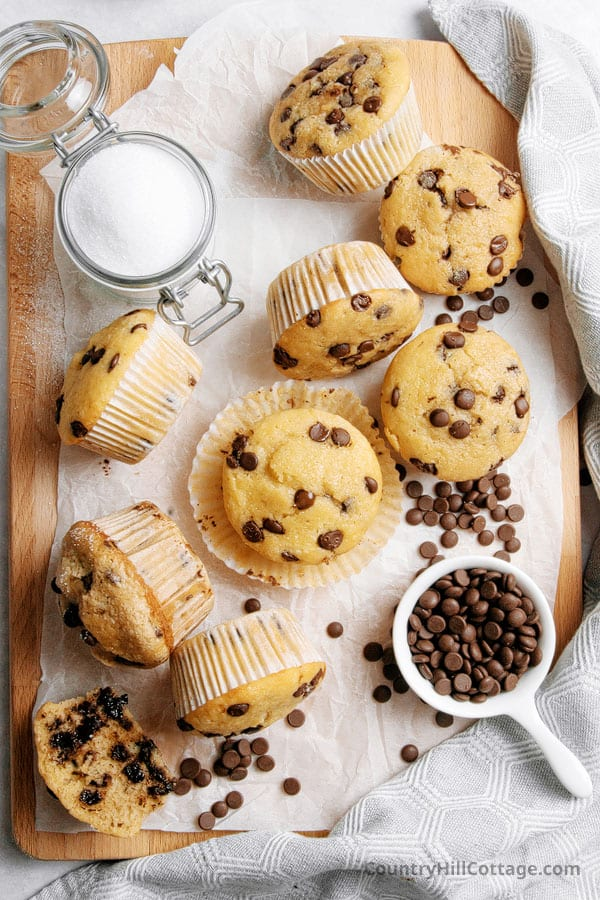
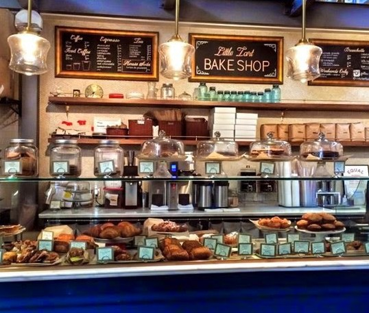
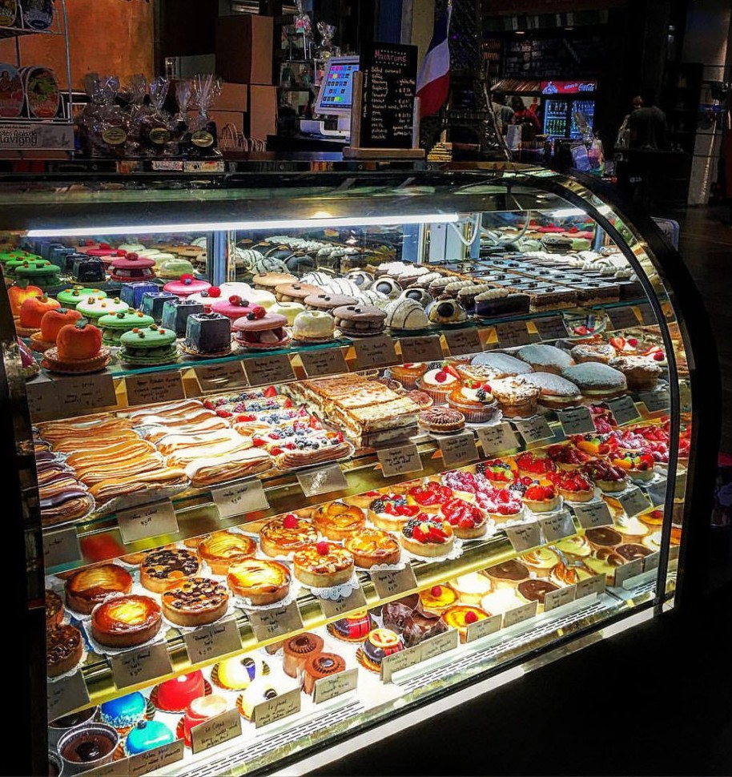
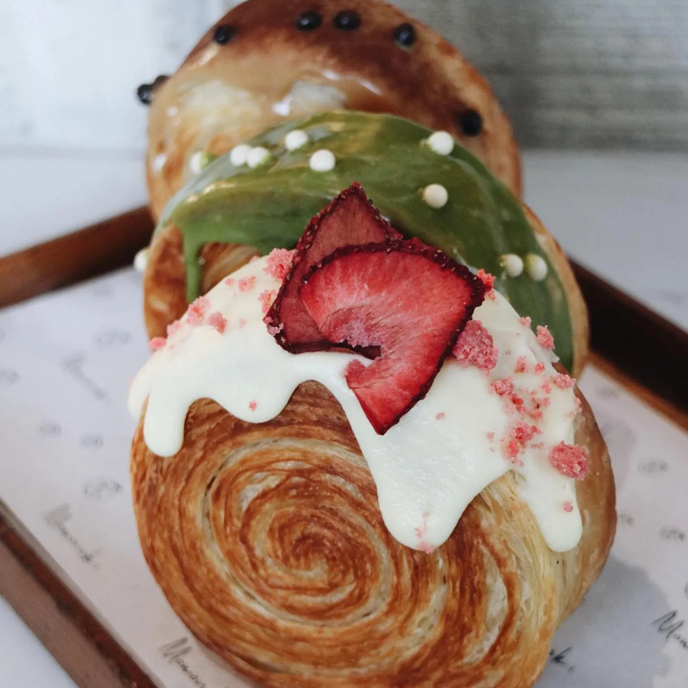

Why Baking?
Baking - The Sweet Aroma of Delicious Goods
Baking is a process of cooking by dry heat especailly in some kind of oven and is possiblely the oldest cooking method. Bakery products can range from bread to pastries to cookies. By the mid-20th century, the baking industry had improved signaificantly through technology and in the way they process bakery foods with vitamins and minerals in large and small productions.
Baking has not only provided us with the sweetest treats and teeths for the tooth fairy. It is also, an activity many people enjoy as a hobby or bonding experience. I, for one, enjoy it as a hobby and a way to share delicious comfort foods with others.
Bakeries
My Favorite Bakeries in Georgia

Little Tart Bakeshop
A bakery filled with passionate bakers, baristas and pastry slingers. A team who crafts delicious food and drinks using local farmers and quality ingredients.
Address:
99 Krog St NE Atlanta, GA 30307
What I like about it
This is a cute bakery shop that I have come to love dearly. I was first introduced to this bakery while looking for something sweet. It's a plus that they make gluten free items that still taste good.

Saint Germain French Cafe & Bakery
A couple who decided to bring a taste of Paris to Georgia with some southern hospitality. This bakery specializes in french pastries, exquistie macarons, and specialty coffee from across the world.
Address:
675 Ponce De Leon Ave Suite N150 Atlanta, GA 30308
What I like about it
This is a notable bakery that has the most amazing macarons and chocolates. Also, they cater to all taste buds. So if you are not much of a sweet person, they have desserts that are not as sweet and some that even taste a bit sour.

Momonoki
A team with a visit to deliver casual Japanese comfort fare. Bringing sweets and pastries made in-house with Japanese technique and ingredients alive to the heart of Midtown Atlanta.
Address:
95 8th St NW #100 Atlanta, GA 30309
What I like about it
This is such a unique bakery that not only is a cafe but it is also half of restaurant where you can get Katsu Sando and enjoy some sake. This cafe has a great mezzanine view of the bustling 75/85 interstate. Plus, the pastries and food in general are truly amazing.